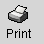
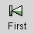
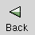
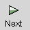
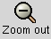
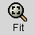
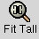

Print Preview.
The Print Preview Dialog is used to display what the printed output will look like. The Print Preview dialog can be used to check whether you have the desired formating and layout before u print out the workbook.
Menu Bar
- File
This menu contains:
Print — Prints the current workbook shown in the Print Preview dialog.
Close — Closes the Print Preview dialog.
- View
This menu contains:
First Page —Shows the first page in the workbook.
Previous Page —Shows the previous page in the workbook.
Next Page —Shows the next page in the workbook.
Last Page —Shows the last page in the workbook.
Zoom in —Zooms the current page in, showing more detail.
Zoom out —Zooms the current page out, showing less detail.
Toolbar
-  Print
Prints the current worksheet to a file or a printer.
-  First
Show the first page in the workbook.
-  Back
Show the previous page in the workbook.
-  Next
Show the next page in the workbook.
 Last
Last
Show the last page in the workbook.
 Zoom in
Zoom in
Zooms the current page in, showing greater detail.
-  Zoom out
Zooms the current page out, showing less detail.
-  Fit
Fits the whole page into the screen space.
 Fit Wide
Fit Wide
Fits the whole width of the page into the screen space.
-  Fit Tall
Fits the whole height of the page into the screen space.